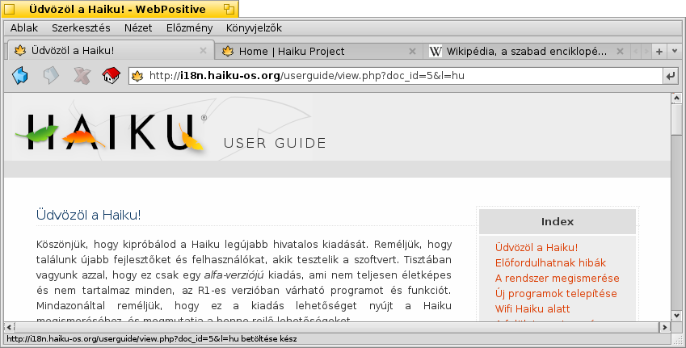
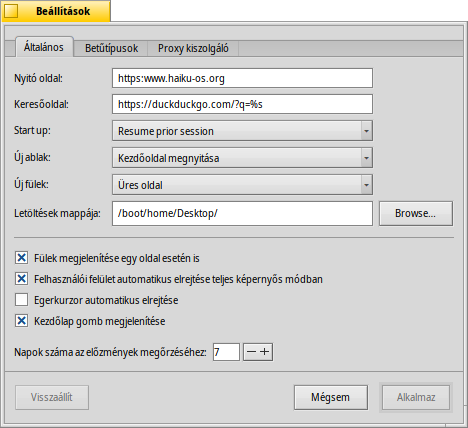
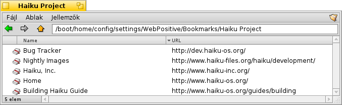

WebPositive
WebPositive
| Asztalsáv: | ||
| Útvonal: | /boot/system/apps/WebPositive | |
| Beállítások: | ~/config/settings/WebPositive/ - beállítások, sütik, átmeneti tár és böngészési előzmény | |
| ~/config/settings/WebPositive/Bookmarks - minden könyvjelző egy külön fájl |
A WebPositive, vagy röviden Web+ a Haiku saját böngészője. A név két részből áll: Positive (a BeOS NetPositive böngészője után), illetve Web (az Apple WebKit-je után). Ez a nyílt forráskódú HTML értelmező funkciótár más, ismertebb böngészők motorja is egyben, mint például a Safari (Mac OS X) és a Chrome (Google). Mivel a WebKit-et használja, így a Web+ képes a legújabb technológiákat is használni.
A WebPositive felülete szokványosnak mondható: a menüsor alatt található a navigációs gombok (vissza, előre, leállítás, kezdőlap).
A gombok melett a címsor foglal helyet, ahová az oldal címét írjuk be.
A navigációs eszközsor alatt található maga az oldal. Több oldal is megnyitható egyszerre, mind-mind a saját lapján (fülön).
Az ablak alján pedig az állapotsor található, ami a betöltés állapotáról informál minket, illetve az egér alatti hivatkozásról. Az oldal betöltése közben egy állapotsáv is megjelenik a jobb oldalon.
 Beállítások
Beállítások
Az menüből érhető el a panel, amivel a program néhány működési jellemzőjét módosíthatjuk.
Az első fül a főbb beállításokat tartalmazza: melyik oldal legyen a , mi legyen a , melyik mappát használja a nek.
Két előugró menüt is találunk, amivel megadható, hogy melyik oldal nyiljon meg új ablak vagy lap megnyitásakor.
A jelölőnégyzetekkel módosíthatjuk, hogy a fülek egy oldal esetében is megjelenjenek-e vagy sem, továbbá a WebPositive vezérlőfelülete megjelenjen-e teljes képernyős módban és az egér kurzor inaktivitás esetén eltűnjön-e vagy sem.
Végül pedig eldönthetjük, hogy a "Kezdőlap"-gomb a gombsoron megjelenjen-e, és hogy hány napig tartsa meg az előzményeket.
A második fülön a böngésző által az oldalon használt betűtípusok és azok méretei adhatóak meg.
Az utolsó fül pedig a proxy beállításokra vonatkozik.
Böngészés
Ha már használtál eddig valamilyen böngészőt, akkor a WebPositive nem fog nagy meglepetést okozni. Ahelyett, hogy az összes funkción végig mennénk, nézzünk meg csupán néhány jelentősebbet.

Új lapokat létrehozhatunk a + gomb segítségével a fül-soron, vagy ha van elég hely, akkor dupla kattintással is az üres területen a fül-soron. Ha több oldal is meg van nyitva, mint amennyi elfér a fül-soron, akkor a < > görgető gombok aktívak lesznek. A jobb oldalon a ∨ gombot lenyomva egy menü jelenik meg az összes megnyitott lap címével együtt, így gyorsan a szükségesre navigálhatunk közöttük.
Egy hivatkozáson a középső gombbal kattintva a hivatkozás megnyílik egy új lapon a háttérben. A SHIFT lenyomvatartásákor pedig előtérben nyílik meg.
A menüből a és a érhető el. Egy másik opciói is a rendelkezésünkre áll: , mely esetben a képek mérete nem változik, csak a szövegé.
Ha teljes képernyős módba váltunk, és a beállítások szerint a vezérlőfelület eltűnik, akkor egy másodperc múlva már nem látjuk azt. Hogy ideiglenesen visszahozzuk, egyszerűen csak mozgassuk az egeret a képernyő felső részére.

Ha a címsorban elkezdünk gépelni, akkor megjelennek azok a címek, melyeket már meglátogattunk, és melyek tartalmazzák a beírt szótöredéket. Ha több betűt is beírunk, akkor szűkíthetjük a megjelenő listát, vagy a ↑ vagy ↓ gombok segítségével válasszuk ki a kívánt címet. Majd az ENTER leütésére a böngésző megnyitja azt. Erre a jobb oldalon lévő gombot is használhatjuk.
Ha címként nem értelmezhető a beírt szöveg, akkor a böngésző megkeresi azt a Google-ben, így a címsor egyben gyors keresésre is használható.Egy objektumon jobb gombbal kattintva egy helyi menü jelenik meg, mely változik a objektumnak megfelelően (például megnyitás új oldalon, vagy letöltés).
A megjelenít egy kereső mezőt az ablak alján, mellyel az oldalon lévő szövegben kereshetünk. A találatokat a böngésző kiemeli az oldalon.
Könyvjelzők
A WebPositive a könyvjelzőket fájlként és mappaként tárolja a ~/config/settings/WebPositive/Bookmarks/ mappában. Új könyvjelző hozzáadásakor egy fájl jön létre. A könyvjelzőket tartalmazó mappát gyorsan megnyithatjuk a menüvel.
Egy könyvjelző címe (URL-je), neve, stb. épp úgy módosítható, mint bármely fájl és annak jellemzői. Előtte győzödjön meg, hogy minden oszlop látható legyen a Nyomkövetőben ( menü), ezután a fájlt kiválasztva csak nyomjuk le az ALT E kombinációt, és szerkesszük a kívánt jellemzőt; oszlopokat pedig a TAB-al válthatunk.
A könyvjelzők egyéni mappákba is rendezhetőek.
A Nyomkövetőt használva a könyvjelzők keresésére remekül kihasználhatjuk annak adottságait.
A aktiválásakor a Nyomkövető beállításoknál, a könyvjelzők lista egyszerűen szűrhető. A ↑ vagy a ↓ gombokkal mozoghatunk a listában, majd az ENTER leütésére megnyithatjuk az oldalt. Győzödjünk meg róla, hogy minden jellemző látható legyen a listában.
Hogy ez működjön, ahhoz az összes könyvjelzőt a ~/config/settings/WebPositive/Bookmarks/ mappában kell tárolni és csak az itt csoportosított könyvjelzők jelennek majd meg a WebPositive menüben.
Letöltések
Az megnyitja a letöltések ablakot, mely tartalmazza az összes eddigi és folyamatban lévő letöltést:

Az aktuális letöltések egy állapotsávval jelennek meg, épp úgy, mint a Nyomkövetőben. Információkat kapunk a letöltési sebességről, a fájl méretéről és a várható befejezésről. A jobb oldali gombokkal ( és ) a letöltés megszakítható, vagy újraindítható, vagy megnyitható (), illetve törölhető () az a listából. A és az gombokkal a lista tartalma "megtisztítható". A "hiányzó" fájlok azt jelentik, hogy a fájl már törölve lett a letöltés helyéről.
A letöltés alatt álló fájl törlésekor a letöltés automatikusan megszakad. Ezt egy ikon ("szellem") is jelezni fogja a letöltések ablakban.
A WebPositive nagyon toleráns a Nyomkövető fájl-kezelésével kapcsolatban. A fájlok átnevezhetőek, vagy mozgathatóak miközben még tart a letöltés, majd a letöltés végeztével a módosítások véglegesítésre kerülnek, melyek megjelennek a letöltések ablakban is.
Elgondolkoztál már azon, hogy hogyan derül ki, hogy honnan lett letöltve egy fálj? Ezt megtudhatod, ha a fájlt megnyitod a LemezFürkész programmal, majd megkeresed a META:url jellemzőt.
Szeretnéd, hogy a letöltések mappában lévő fájl címe (hogy honnan lett letöltve) megjelenjen? Ekkor egy könyjelzőt kell a letöltések mappájába másolni, majd a megjelenítendő oszlopoknál az URL-t kiválasztani. Ezután akár törölhető is a könyjelző a mappából.
Billentyű parancsok
Néhány hasznos billentyű-kombináció:
| ALT T | Új fül megnyitása. | |
| ALT W | Jelenlegi fül bezárása. | |
| ALT N | Új ablak megnyitása. | |
| SHIFT ALT W | A jelenlegi ablak bezárása. | |
| ALT ENTER | Teljes képernyős mód. | |
| ALT R vagy F5 | Az aktuális oldal frissítése. | |
| ALT H | Kezdőlap megnyitása. | |
| ALT D | A Letöltések ablak megjelenítése/elrejtése. | |
| ALT F | A keresőmező megjelenítése az oldalon való kereséshez (elrejtés az ESC leütésével). | |
| ALT B | Könyvjelző az oldalhoz. | |
| ALT M | Könyvjelzők kezelése, a Könyvjelzők mappa megnyitása. | |
| ALT ← | Az előző oldal megnyitása az előzmények alapján. | |
| ALT → | Az előzmények szerinti következő oldal megnyitása. |